Die im Karussell versammelten Werke stammen aus über einem Jahrhundert Kunstgeschichte – vom Impressionismus über den Symbolismus bis zum Expressionismus – und zeigen doch alle denselben Bezugspunkt: den Baum als Träger von Bedeutung, nicht nur als Landschaftselement. Ob bei Monets flüchtigem Lichtspiel, Van Goghs innerer Bewegtheit, Klimts golden verdichteter Symbolik oder Friedrichs romantischer Naturmystik – jedes Werk übersetzt die Beziehung zwischen Mensch und Baum in eine eigene visuelle Sprache. Diese Vielfalt an Epochen, Stilen und kulturellen Kontexten bildet die Grundlage, um im Folgenden zu zeigen, wie tief die Bildgeschichte des Baumes mit Fragen von Identität, Erinnerung und emotionalem Ausdruck verwob ist.
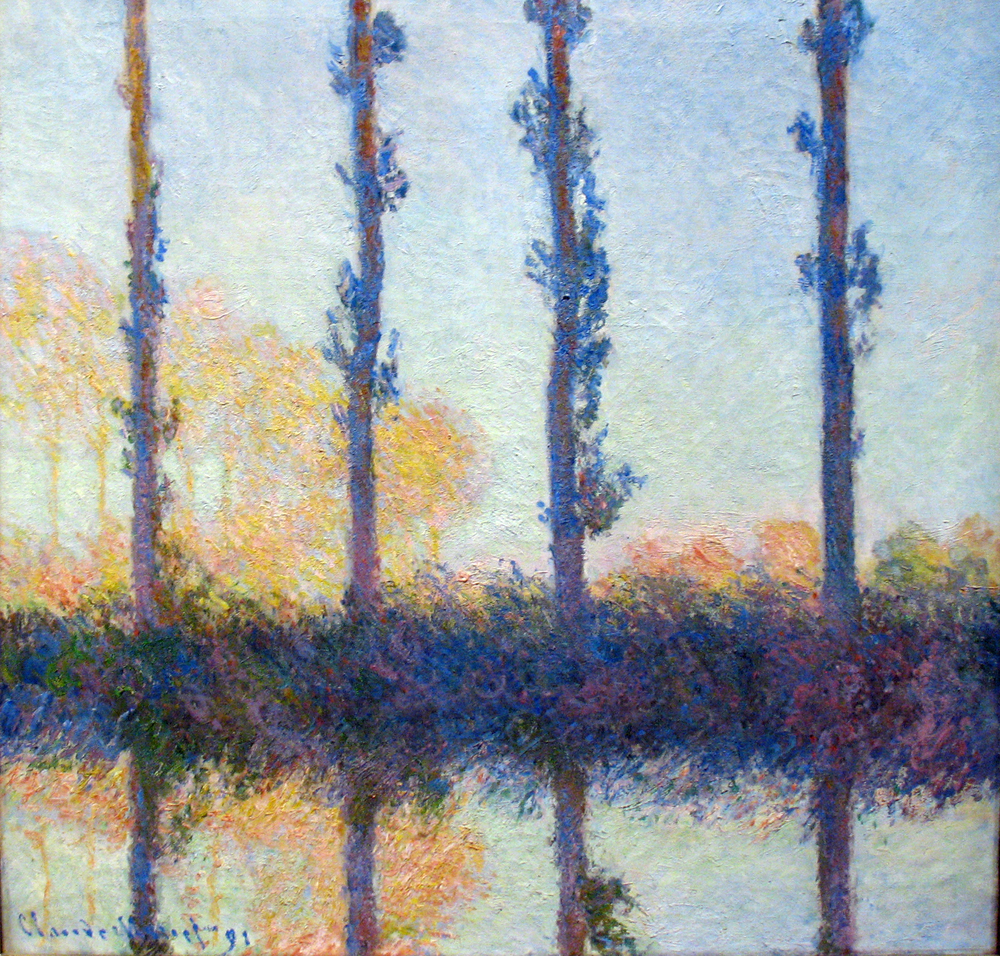
Die vier Bäume, C. Monet, 1891
Vier Pappeln lösen sich im flirrenden Licht fast auf – der Baum wird zum Träger flüchtiger Wahrnehmung statt fester Form.
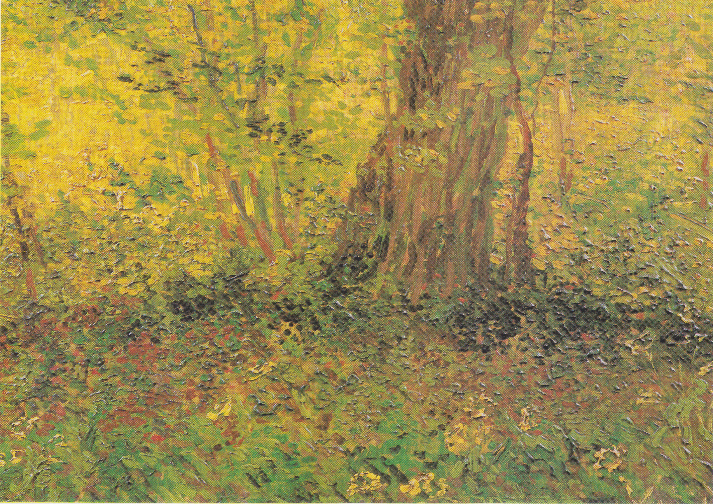
Bäume und Unterholz, Van Gogh, 1887
Wirbelnde Pinselzüge verwandeln das Unterholz in einen Ausdruck innerer Bewegtheit – Natur als Spiegel psychischer Spannung.
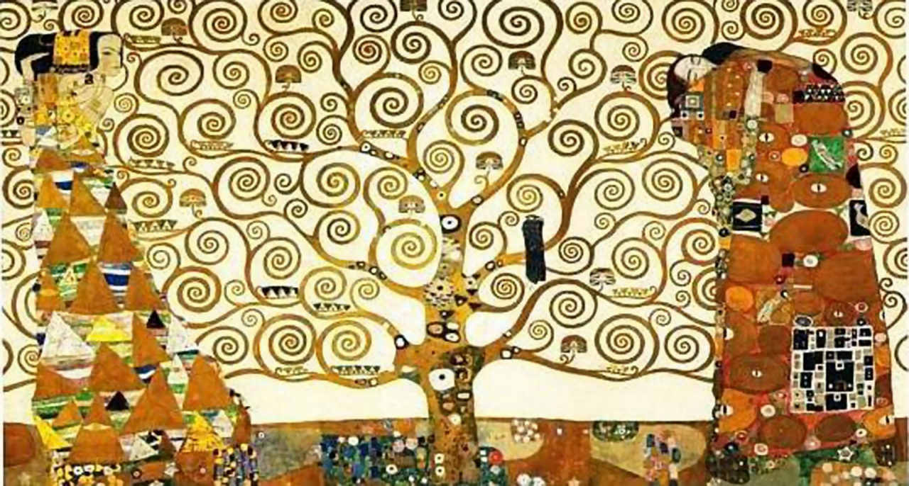
Baum des Lebens, G. Klimt, 1909
Goldene Spiralen verdichten den Baum zum universellen Symbol von Leben, Tod und ewiger Wiederkehr.
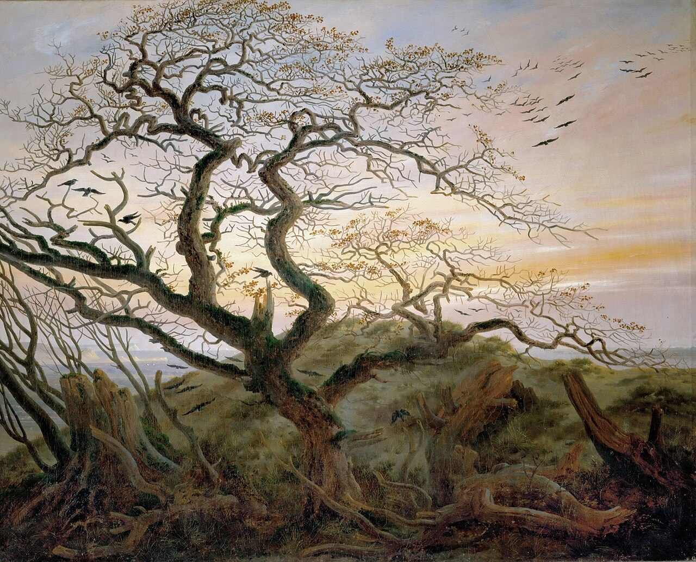
Der Baum der Krähen, Caspar D. Friedrich, 1822
Ein toter, von Raben umkreister Baum vor Abenddämmerung – romantische Naturmystik als Sinnbild von Vergänglichkeit.
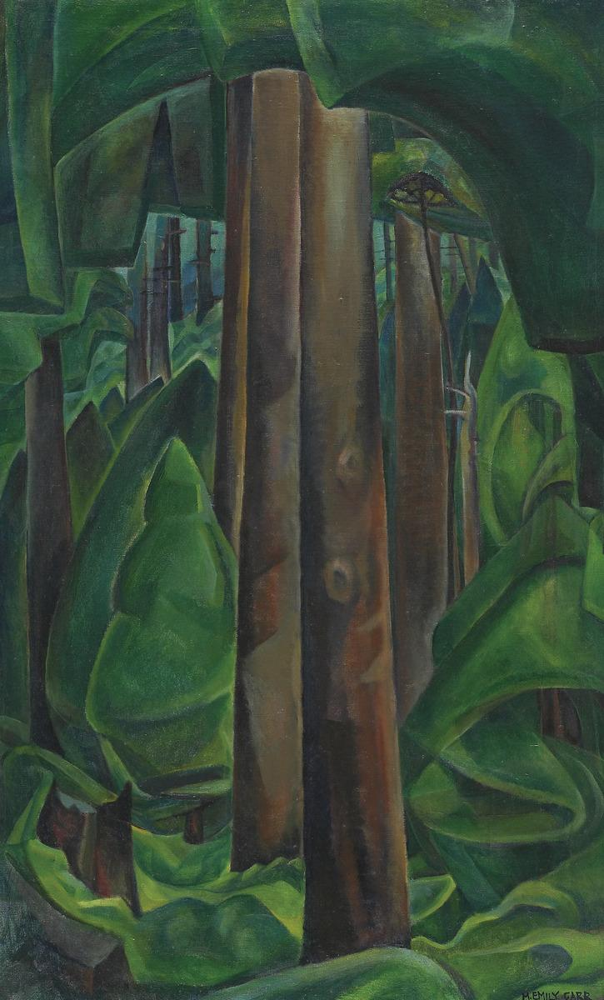
Forest Interior, Emily Carr, 1942
Wirbelnde, fast atmende Baumstämme – der Wald als lebendiger, in sich kreisender Organismus.
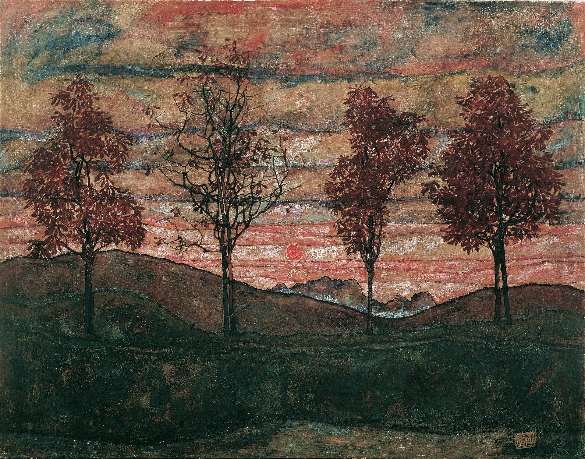
Vier Bäume, Egon Schiele, 1917
Kahle, fast menschlich wirkende Baumfiguren vor sinkender Sonne – Einsamkeit und Endlichkeit als stille Zeichen.

In Fosset, ein Bach, Fernand Khnopff, 1897
Stille, symbolistische Waldlandschaft – die Natur als Schwelle zu einer unbewussten, traumähnlichen Welt.
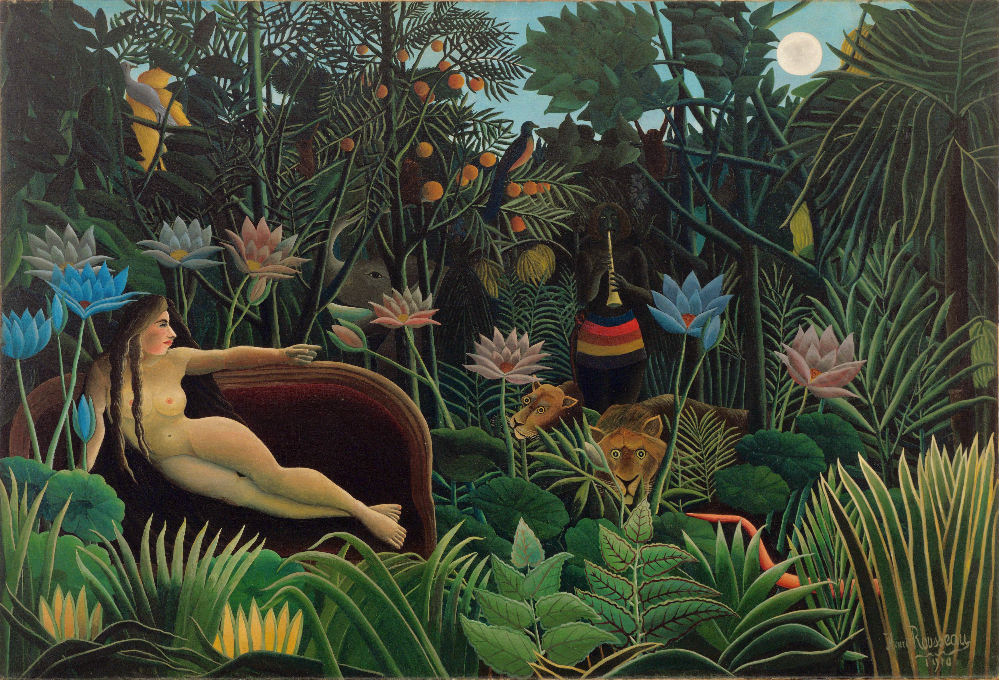
Le Rêve, Henri Rousseau, 1910
Ein üppiger, unwirklicher Dschungel als Bühne des Unbewussten – Traum und Wald verschmelzen zu einem Bild.
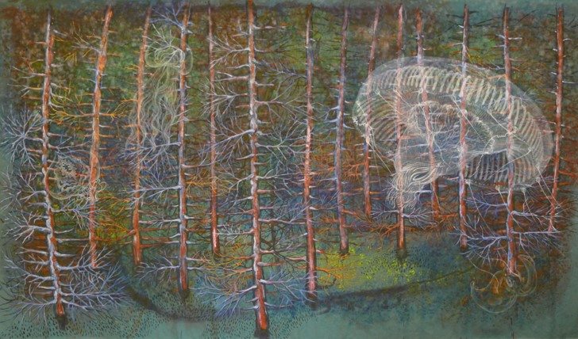
Waldseele I
Eine moderne Interpretation des Waldes als lebendiger, symbolischer Raum – Acryl auf Leinwand.

Greenhouse, Ana Bertina Aguilera Husch, 2023
Eine moderne Interpretation des Waldes als lebendiger, symbolischer Raum.
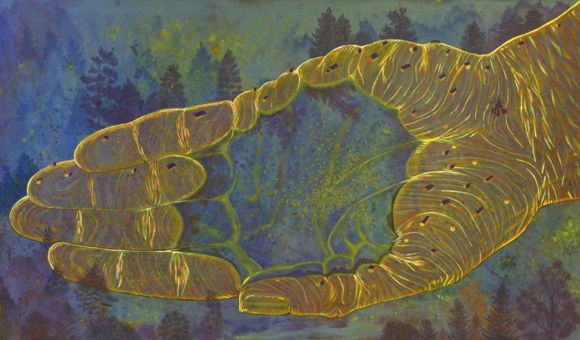
Waldseele II
Eine moderne Interpretation des Waldes als lebendiger, symbolischer Raum – Acryl auf Leinwand.
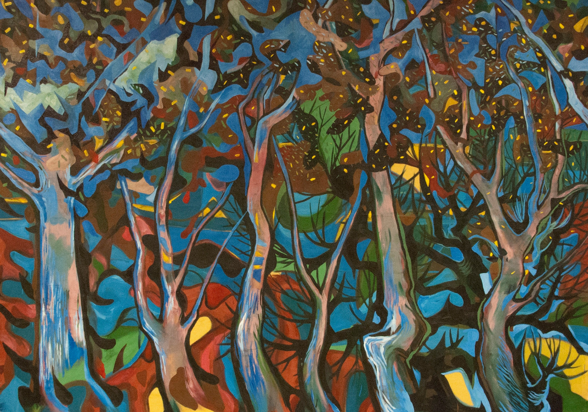
Wald in Farben
Eine moderne Interpretation des Waldes als lebendiger, symbolischer Raum – Acryl auf Leinwand.
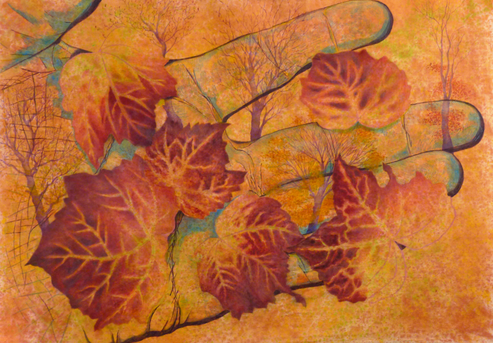
Hand des Herbsts
Eine moderne Interpretation des Waldes als lebendiger, symbolischer Raum
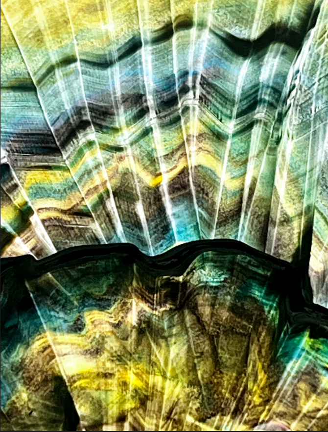
Atmende Spuren I
Eine moderne Interpretation des Waldes als lebendiger, symbolischer Raum – digitale Illustration.
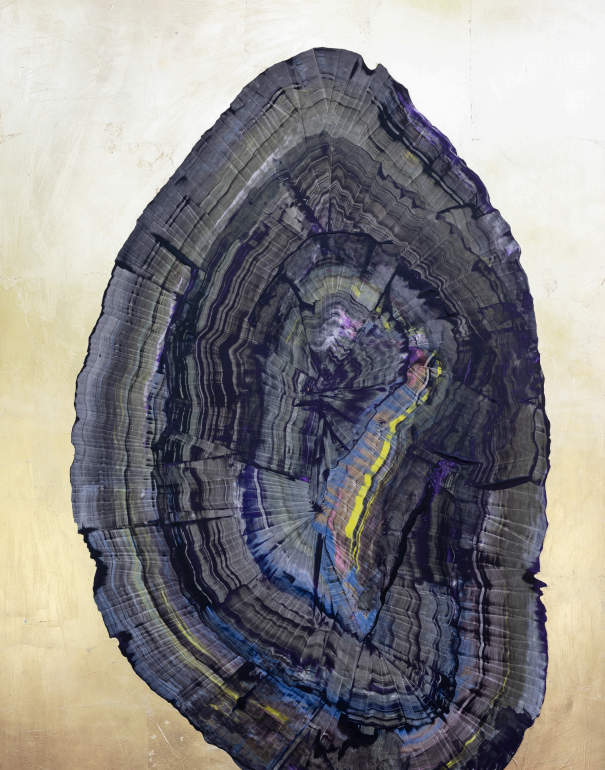
Atmende Spuren II
Eine moderne Interpretation des Waldes als lebendiger, symbolischer Raum – digitale Illustration.
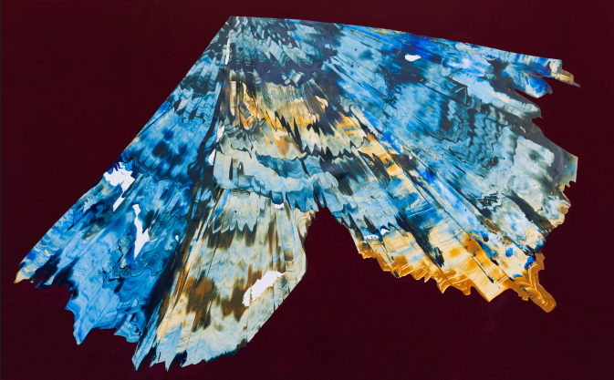
Atmende Spuren III
Eine moderne Interpretation des Waldes als lebendiger, symbolischer Raum – digitale Illustration.
📖 Essay lesen: Wald und Kunst (Klicken zum Ausklappen)
Wald und Kunst: Zeichen, Erinnerung und das Unbewusste
Der Baum ist seit Jahrtausenden mehr als ein biologisches Wesen – er ist Zeichen. Bei den Maya galt die Ceiba als Weltenbaum, der Unterwelt, irdische Ebene und Himmel miteinander verband. Im alten Ägypten stand der Baum für Auferstehung und frühlingshafte Erneuerung, während die Palme als Attribut des Gottes Osiris galt. In Oaxaca, Mexiko, verkörpert der Árbol del Tule – eine jahrtausendealte Ahuehuete – bis heute lokale Identität und Beständigkeit, so wie charakteristische Arten der österreichischen Wälder, etwa Fichte, Tanne oder Lärche, Teil des kollektiven Gedächtnisses eines anderen Kulturraums sind. In beiden Fällen ist der Baum kein bloßer Bestandteil der Landschaft, sondern Träger von Identität – ein Zeichen, das eine Gemeinschaft von sich selbst erzählt.
Genau an diesem Punkt wird die Semiotik zum notwendigen Werkzeug, um zu verstehen, wie der Baum zum Träger von Bedeutung wird. Die Semiotik untersucht, wie Zeichen Bedeutung erzeugen und vermitteln[1] – und im Wald zeigt sich, dass diese Bedeutungsproduktion nicht erst beim Menschen beginnt. Die Natur selbst ist ein lebendiges Kommunikationsnetz (Biosemiotik): Bäume tauschen über unterirdische Mykorrhiza-Netzwerke chemische und elektrische Signale aus[2], Organismen senden und lesen fortlaufend Zeichen, um zu überleben. Der Wald „spricht" bereits, bevor der Mensch ihn symbolisch auflädt – und genau darin liegt seine tiefere Verwandtschaft mit dem Unbewussten: Beide sind Systeme, die kommunizieren, ohne dabei auf bewusste, sprachlich artikulierte Bedeutung angewiesen zu sein.
Kunst übernimmt hier die Rolle der Übersetzerin. Sie macht sichtbar und mitteilbar, was sonst stumm, diffus oder unbewusst bliebe – sei es das biologische Signal eines Ökosystems oder die innere Spannung eines Traumas[3]. Genau diese Übersetzungsleistung ist es, was ästhetische Erfahrung und psychische Sublimation teilen: Beide verwandeln unverarbeitetes, unbewusstes Material in etwas Sicht- und Mitteilbares. So wie künstlerischer Ausdruck als Kanal für das Unbewusste dient, kann auch das Zusammensein mit Wäldern eine therapeutische, regulierende Wirkung entfalten. Diese Seite vertritt die These, dass der Kontakt mit dem Wald – ähnlich wie künstlerisches Schaffen – dazu beiträgt, seelische Prozesse zu verarbeiten, die dem bewussten Denken oft verschlossen bleiben, und so Wohlbefinden, Entscheidungen und das Sein des Menschen ganzheitlich mitprägt.
Diese Übersetzungsleistung wird besonders anschaulich in der Land Art, einem künstlerischen Konzept, das die Landschaft selbst zur Leinwand macht: Werke entstehen im Freien, aus vergänglichen, natürlichen Materialien, ausgesetzt Wind, Licht und Verfall. Ein besonders eindrückliches Beispiel ist der Bosque de Oma im spanischen Baskenland, wo der Künstler Agustín Ibarrola lebende Bäume mit Figuren, Augen und geometrischen Mustern bemalte, sodass sich Bilder erst beim Durchqueren des Waldes in Bewegung erschließen[4]. Hier wird der Wald buchstäblich zum begehbaren Kunstwerk – die Grenze zwischen Naturraum und künstlerischem Zeichen löst sich auf.
Aus dieser Verschmelzung entsteht auch die ethische Dimension des Themas: Wald und Kunst stehen in wechselseitiger Fürsorge zueinander[3]. Der Wald liefert der Kunst Material, Inspiration und Raum, während die Kunst dem Wald eine Stimme verleiht, ihn ins kollektive Bewusstsein rückt und so zu seinem Schutz beiträgt. Weil Kunst als emotionales Kommunikationsmittel wirkt, bleiben ökologisches Wissen und Sorge um den Wald nicht abstrakte Information, sondern werden zu emotional verankerter, langfristig wirksamer Erfahrung.
In diesem Sinn ist die Konvivenz mit dem Wald kein romantisches Zusatzthema neben der Kunst, sondern ihr strukturelles Äquivalent: beides Formen der Sublimation jener Traumata und unbewussten Anliegen, die der reinen Vernunft verschlossen bleiben, aber im Kontakt mit Zeichen – seien es künstlerische Bilder, ein bemalter Baum oder die stille Sprache eines Ökosystems – einen Weg zur Bewusstwerdung und Heilung finden.
- Zur Semiotik des grafischen Kunst als Bedeutungssystem, s. SciELO Chile – Arte gráfico, sistemas de representación visual y semiótica ; sowie Filosofía en la Red – Arte, signos, semiótica .
- Zur Biosemiotik des Waldes und den Mykorrhiza-Netzwerken, in Anlehnung an Eduardo Kohns Konzept „Wie Wälder denken", s. Redalyc – Rezension zu Eduardo Kohn, „Cómo piensan los bosques" .
- Zur Rolle der Kunst als Vermittlerin zwischen ökologischen und emotionalen Bedeutungssystemen und zur wechselseitigen Fürsorge von Wald und Kunst, s. SEMARNAT – Cuando el arte también siembra árboles ; sowie zur Bedeutung ökologischer Interaktionen für kollektive Sinnbildung, SciELO México – Interacciones ecológicas y colectivos .
- Zum Bosque de Oma und dem Werk Agustín Ibarrolas, s. LaSexta – Bosque de Oma, arte en plena naturaleza .
Beitragende Künstlerinnen
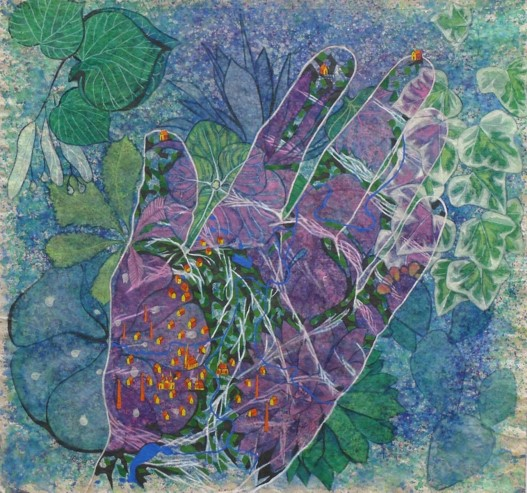
Ana Bertina Aguilera Husch und Christian Santana Prinz
Illustratorin, Maler & Malerin
Auf ihre ganz eigene Weise erforscht das Künstler- und Ehepaar Ana B. Hursh (Aguilera) und Christian Santana Prinz das Genre der Landschaft als vielschichtigen symbolischen Raum. Ihre gemeinsamen Arbeiten gehen weit über eine bloße mimetische Abbildung der Natur hinaus: Durch das Zusammenspiel von Wahrnehmung, Erinnerung und kultureller Prägung verwandeln sie die Umwelt in ein komplexes Gefüge, in dem Natur, Individuum und imaginative Prozesse miteinander verschmelzen.
Als reisende Beobachter erkunden sie fremde Umgebungen und absorbieren sensorische Reize, die dem gewohnten Blick oft verborgen bleiben. Im schöpferischen Dialog als Frau-Mann-Binom hinterfragen sie konventionelle Begriffe von Autorschaft und erweitern den semantischen Raum des Werkes. So wird die Landschaft in ihrer Kunst zu einem intimistischen Terrain – ein Ort der Anpassung, der Identitätssuche und der tiefen Projektion des menschlichen Wesens in seiner Beziehung zur Natur.
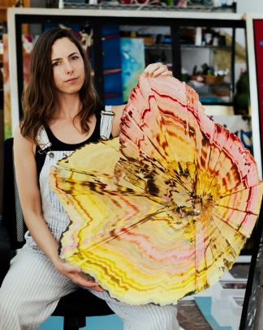
Sabina Solot – Vestiges That Breathe
Organische Dynamiken, Materie und Spuren der Erinnerung
Sabina Solots künstlerische Praxis erweitert die Grenzen der bildnerischen Sprache durch gestische Erkundung und die direkte Auseinandersetzung mit der Materie. Anstelle einer bloßen Abbildung der Natur beschwört ihr Werk organische Prozesse herauf – Wachstum, Akkumulation und ständige Transformation.
In ihrer Serie Vestiges That Breathe erforscht Solot das Fortbestehen biologischer Strukturen im Spannungsfeld zwischen Erinnerung und Materie. Wie versteinertes Leben vereinen ihre Werke fraktale Oberflächen und mineralisch-botanische Hybridformen. Das Projekt versteht sich als eine Archäologie fundamentaler Naturstrukturen.